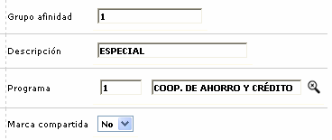
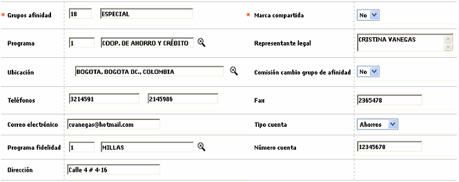
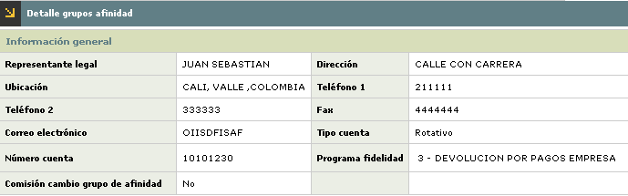
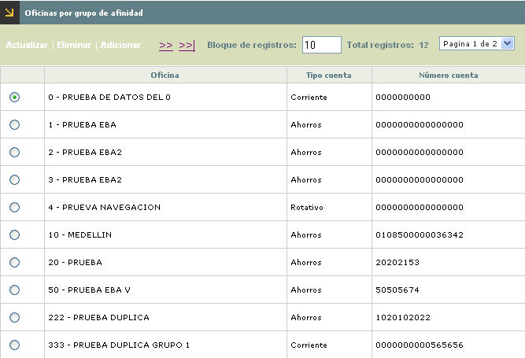
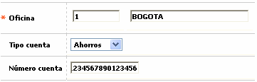
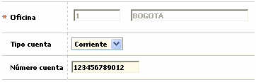

Grupos de afinidad
Mediante esta opción se parametrizan los grupos que presentan características comunes para otorgarles algunos beneficios a los clientes que pertenezcan a cada grupo de afinidad, con el objetivo de incentivar el consumo; cada grupo tiene asociado un programa definido por Visa, utilizado para la generación de estadísticas con destino a la franquicia con la información por ella requerida.
Al ingresar a la opción se despliega un filtro que le permite al actor consultar algún registro específico por el grupo, la descripción del mismo, el programa asociado o la condición de marca compartida. Por defecto al ingresar al formulario muestra todos los grupos de afinidad parametrizados por la entidad.


El formulario posee los hipervínculos Segmentos, Definición de bines y Oficinas por grupo de afinidad que le permiten a la entidad parametrizar los demás componentes del producto. Adicionalmente contiene las opciones Actualizar, Eliminar, Adicionar y Detalle.
Adicionar: si el usuario invoca la opción Adicionar, se despliega un nuevo formulario con los siguientes campos.

Descripción de campos
|
Grupo afinidad |
Campo numérico de hasta 3 dígitos, obligatorio, en el que se ingresa el código de cada uno de los grupos de afinidad a adicionar. Va acompañado de un campo alfenumérico de hasta 30 caracteres en donde se registra el nombre o descripción del grupo. |
|
Marca compartida |
Este campo obligatorio tipo combo permite indicar Si o No el grupo que se está definiendo será utilizado para lo conformación de productos de marca compartida. |
|
Programa |
Campo con lista de valores de la que se selecciona el programa de afinidad establecido por visa para efectos de generación de las estadísticas de los productos que tenga asociado al grupo de afinidad. |
|
Representante legal |
Este campo no obligatorio de hasta 30 caracteres se registra el nombre de la persona que hace las veces de representante legal del grupo de afinidad. |
|
Ubicación |
Campo con lista de valores que permite seleccionar la ubicación geográfica de la dirección de la sede principal del grupo de afinidad. |
|
Comisión cambio grupo de afinidad |
Este campo tipo combo permite indicar Si o No el cambio de un grupo de afinidad a otro implica algún costo para la empresa respectiva. |
|
Teléfonos |
Campos en los que se regitran los números telefónicos de la sede principal del grupo de afinidad. |
|
Fax |
En este campo se ingresa el número del fax de la sede principal del grupo de afinidad. |
|
Correo electrónico |
Campo alfanumérico que permite registrar el e-mail al cual se le pueden enviar comunicaciones por este medio al grupo de afinidad. |
|
Tipo cuenta |
En este campo tipo combo se selecciona entre Ahorros, Corriente o Rotativo el tipo de cuenta asociado al grupo de afinidad para efectos del abono de los beneficios recibidos. |
|
Número de cuenta |
Campo no obligatorio en el que se registra el número de cuenta para el abono de beneficios al grupo de afinidad. |
|
Programa fidelidad |
En este campo con lista de valores se selecciona el esquema de puntajes asociado al grupo de afinidad y que determina los beneficios obtenidos por este. |
|
Dirección |
Campo alfanumérico en el que se registra la nomenclatura correspondiente a la ubicación de la sede principal del grupo de afinidad. |
Actualizar: si el usuario selecciona un registro e invoca la opción Actualizar, se despliega un formulario en el cual el único campo NO modificable es el grupo de afinidad.

Detalle: si el usuario selecciona un registro e invoca la opción Detalle, se despliega un formulario con la información completa del registro y en el cual ninguno de sus campos es modificable.

Oficinas por grupo de afinidad: si el usuario selecciona un grupo de afinidad e invoca el hipervínculo Oficinas por grupo de afinidad, se despliega un nuevo formulario en el que se parametrizan las oficinas de la empresa relacionadas con el grupo de afinidad permitiendo si es el caso, asignar una cuenta a cada oficina. Debe aclararse que estas oficinas no necesariamente son las sucursales de la entidad, sino que pueden ser las sucursales de la empresa con la cual se suscribe convenio de grupo de afinidad.

El formulario contiene las opciones Acutalizar, Eliminar y Adicionar.
Adicionar: si el usuario invoca la opción Adicionar, se despliega un nuevo formulario con los siguientes campos.

Descripción de campos
|
Oficina |
Campo obligatorio en el que se registra el código de cada una de las oficinas asociadas con el grupo de afinidad. Va acompañado de un campo en el que se registra el nombre o descripción de la oficina. |
|
Tipo cuenta |
En este campo no obligatorio tipo combo, se selecciona entre Ahorros, Corriente o Rotativo el tipo de cuenta asociado con la oficina. |
|
Número cuenta |
Campo de hasta 16 caracteres en el que se registra el número de la cuenta asociada a la oficina. |
Actualizar: si el usuario selecciona un registro e invoca la opción Actualizar, se despliega un formulario en el cual los campos modificables son Tipo cuenta y Número cuenta.
